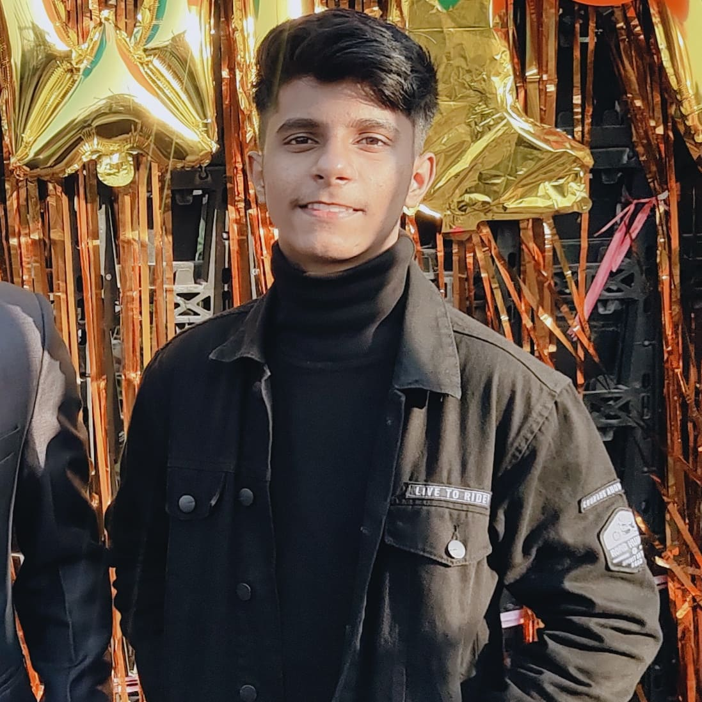

Leading from the front and Hardworking Qualities
Good Communication Skills with fluency in English and Hindi
| GOATS | TEAM | COUNTRY |
|---|---|---|
| Lionel Messi | Inter Miami FC | Argentina |
| Cristiano Ronaldo | AL Nassar FC | Portugal |
| Neymar | Al Hilal | Portugal |
| Suarez | Grêmio Foot-Ball Porto | Uruguay |